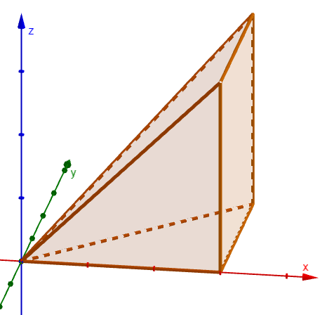
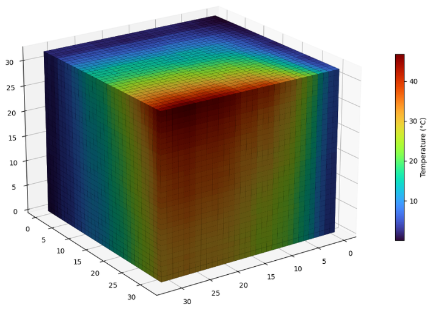

Average Value of a Function over a Solid
The average value of a function \(f(x, y, z)\) throughout a solid \(E\) can be found using triple integrals. It is the integral of the function, divided by the volume of the solid.
Average Value over a Solid
An Example
Consider the function below and the solid \(E\) bounded by \(0 \le x \le 6\), \(0 \le y \le x\), and \(0 \le z \le x\). Find the average value of this function throughout this solid.

First find the volume of the solid.
Next integrate the function over the solid.
The average value of the function throughout the solid is 108.
An Example
The average temperature throughout a solid \(E\) can also be found using triple integrals, where \(T(x, y, z)\) gives the temperature, in \(^\circ\mathrm{C}\), at each point in space.
For this problem, the temperature function is below, and the solid \(E\) is the cube \(0 \le x \le 4\), \(0 \le y \le 4\), and \(0 \le z \le 4\). In degrees Celsius, what is the average temperature throughout \(E\)?

The volume of the cube is \(4 \cdot 4 \cdot 4 = 64\). Next integrate the temperature over the cube. The function does not depend on \(z\), so the \(z\)-integral contributes a factor of \(4\).
The average temperature is about \(23.33^\circ\mathrm{C}\).